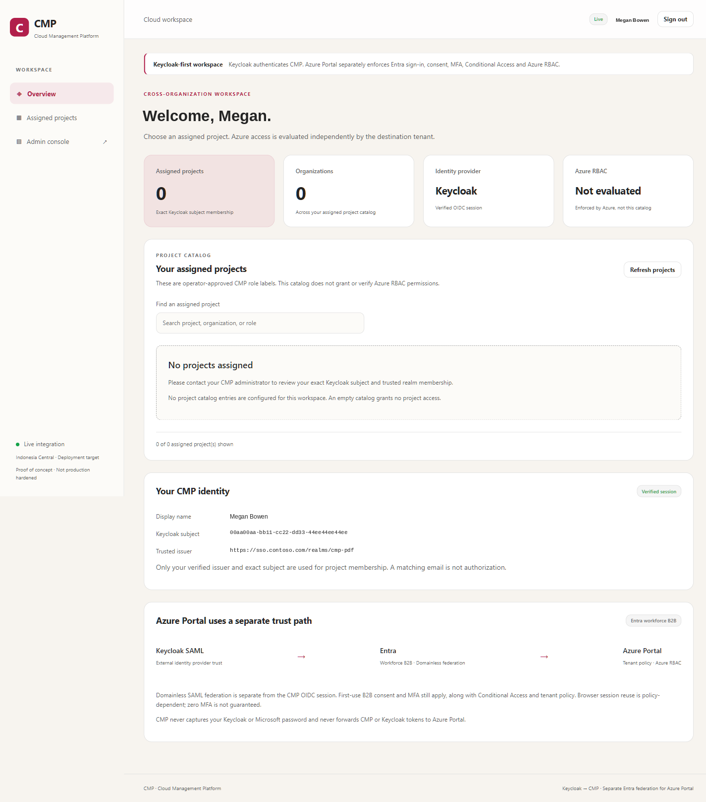
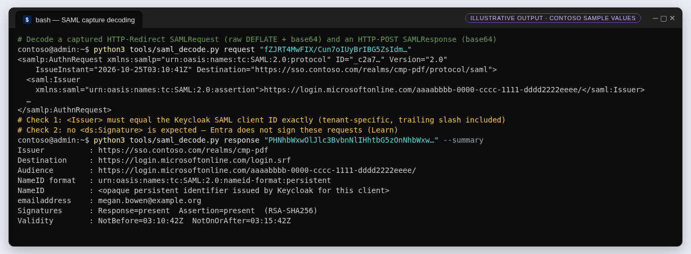
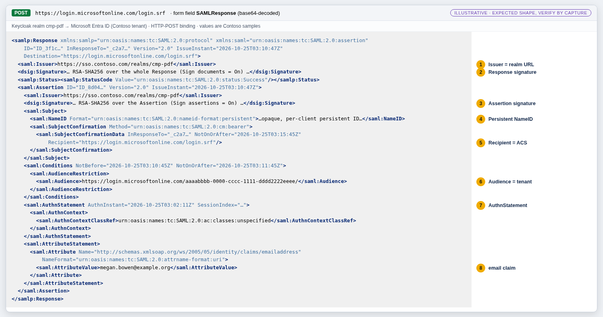

Guide 8 of 9
G8 · Test end to end and troubleshoot
A test plan that separates proven from open steps, a decoder for SAML captures, and a symptom table for the failures that actually happen with Keycloak and Entra.
▶ Watch this in the video walkthrough: Step 6 · Test and troubleshoot (starts at 7:55)
Outcome#
Evidence, captured in order, that a Keycloak user who is an approved Contoso guest reaches the Azure portal through the SAML trust — or a precise record of which step fails.
Test plan#
| # | Test | Pass criterion | Status |
|---|---|---|---|
| T1 | Metadata and discovery (G2/G3) | Issuer, endpoints and certificate match; admin paths 404 | Proven |
| T2 | CMP sign-in with a local Keycloak user | First-password change, CMP callback, empty catalog grants nothing | Proven |
| T3 | Guest redemption via domain_hint | Browser goes to Keycloak, not Google/MSA; consent shown; status Accepted | Open |
| T4 | Azure portal via portal.azure.com/<tenant-id> | SAMLRequest to Keycloak; signed SAMLResponse accepted at login.srf | Open |
| T5 | MFA | MFA registration/challenge in the Contoso tenant; sign-in log shows CA/MFA result | Open |
| T6 | Authorization | Guest sees only the Reader resource group | Open |
| T7 | Negative tests | No email claim → AADSTS5000819; disabled Keycloak user → no assertion; wrong audience → rejected | Open |
| T8 | Session behaviour | Expired Entra session with valid Keycloak session → SSO at Keycloak, MFA still per policy | Open |


Capture and decode SAML messages#
Use the browser's developer tools (Network, preserve log) or a SAML tracer extension. The request is in the SAMLRequest query parameter (Redirect binding); the response is the SAMLResponse form field POSTed to login.srf. Treat captures as sensitive — they contain personal data.
tools/saml_decode.py (helper written for this guide)
#!/usr/bin/env python3
"""Decode SAML messages captured from the browser. Usage:
saml_decode.py request <SAMLRequest value> (HTTP-Redirect: URL-decoded, base64, raw DEFLATE)
saml_decode.py response <SAMLResponse value> [--summary] (HTTP-POST: base64)"""
import base64, sys, urllib.parse, zlib
import xml.dom.minidom as minidom
NS = {"saml": "urn:oasis:names:tc:SAML:2.0:assertion", "ds": "http://www.w3.org/2000/09/xmldsig#"}
def decode(kind, value):
raw = base64.b64decode(urllib.parse.unquote(value))
return zlib.decompress(raw, -15) if kind == "request" else raw # -15 = raw DEFLATE, no zlib header
def summary(xml_bytes):
from xml.etree import ElementTree as ET
root = ET.fromstring(xml_bytes) # parse only trusted local captures
f = lambda path: (root.find(path, NS).text if root.find(path, NS) is not None else "-")
nameid = root.find(".//saml:Subject/saml:NameID", NS)
print("Issuer :", f("saml:Issuer"))
print("Destination :", root.get("Destination"))
print("Audience :", f(".//saml:AudienceRestriction/saml:Audience"))
print("NameID format :", nameid.get("Format") if nameid is not None else "-")
print("email claim :", f(".//saml:Attribute[@Name='http://schemas.xmlsoap.org/ws/2005/05/identity/claims/emailaddress']/saml:AttributeValue"))
print("Signatures :", len(root.findall(".//ds:Signature", NS)))
if __name__ == "__main__":
kind, value = sys.argv[1], sys.argv[2]
data = decode(kind, value)
if "--summary" in sys.argv:
summary(data)
else:
print(minidom.parseString(data).toprettyxml(indent=" "))




Troubleshooting#
| Symptom | Most likely cause | Check / fix |
|---|---|---|
Entra error AADSTS5000819 — email claim missing or not matching | Keycloak user has no email; mapper missing; or IdP is domain-based | Add/verify the user's email; check the emailaddress mapper (G2); confirm Domainless (G4) (Learn) |
| Keycloak rejects the request before showing a login page | AuthnRequest Issuer ≠ Keycloak client ID | Decode the request; client ID must be https://login.microsoftonline.com/<tenant-id>/ with trailing slash |
| Keycloak complains about a missing request signature | Client signature required is on | Turn it off for the Entra client — Entra does not sign requests (Learn) |
| Redemption goes to Google or Microsoft-account sign-in | No or malformed domain_hint; default redemption order applied | Rebuild the redirect URL with domain_hint = Issuer URI (Learn); reset redemption if needed (Learn) |
| Signature validation fails at Entra after a Keycloak change | Realm key rotated; Entra holds the old certificate | Update the federation certificate (G9); keep the old key passive until done |
| Assertion rejected as expired | Clock skew on the Keycloak VM | Check NTP/chrony on the VM; assertion validity windows are short |
| Portal asks for MFA every time | Expected: Entra enforces MFA for guests in the resource tenant | Not a defect; review CA sign-in frequency and persistent session settings for guests (Learn) |
| Portal opens but shows no resources | RBAC not assigned, wrong directory, or propagation | Check the tenant in the portal URL and the guest's role assignments |
| Keycloak unreachable from the Internet | Subnet NSG without 443/80 | Effective security rules on the NIC; apply the scoped repair (G1) (Learn) |
Where to look#
- Entra sign-in logs for the guest: authentication details, Conditional Access result, MFA requirement source (Learn).
- Entra audit logs for changes to the federation configuration and invitations.
- Keycloak events: enable login events on the realm to record LOGIN and LOGIN_ERROR with client and reason (Keycloak: auditing).
- CMP: sanitized audit entries and server logs in Log Analytics; never paste tokens or SAML captures into tickets.